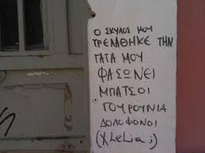

Σήμερα ήταν μια άσχημη μέρα. Μου άνοιξαν το και μου έκλεψαν το . Η , κλασσικά και παρόλο που το μου έδινε το του και έδειχνε που βρισκόταν, αδιαφόρησε, με αποτέλεσμα... !Παίζουν με τα νεύρα μου και η διάθεση μου είναι...